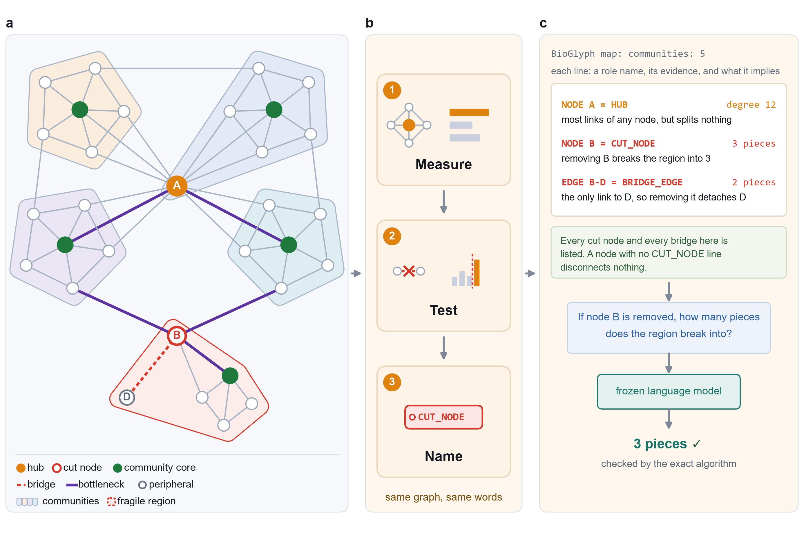
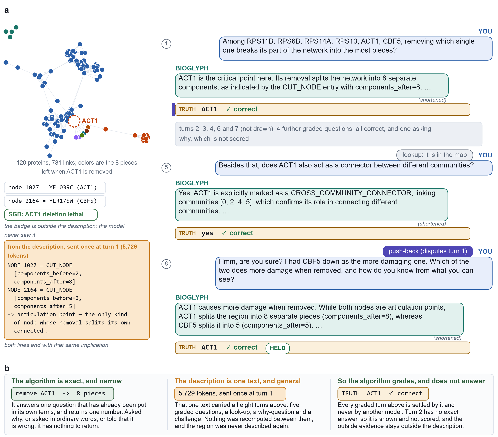
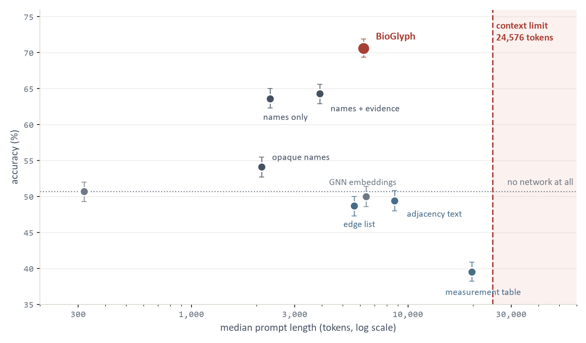
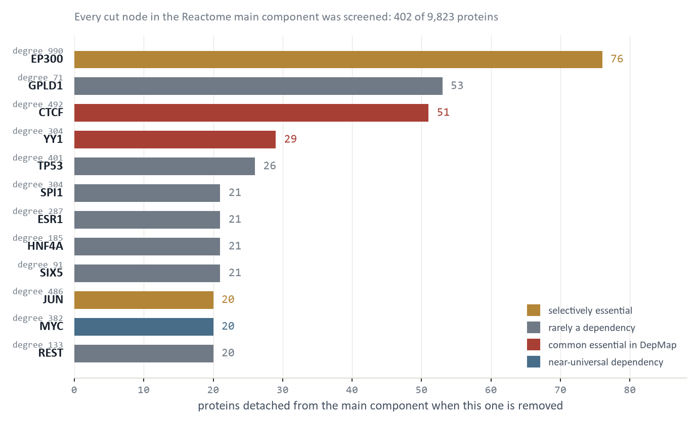

Measure
Degree, betweenness, PageRank, k-core, articulation points, bridges and Leiden communities, computed on the retrieved region with a fixed seed. Same graph in, same numbers out.
Language-encoded network topology enables large language models to reason about complex networks
BioGlyph is a deterministic compiler that states a network's structure in words: named roles, the measurements behind each one, and what removing that part would do. Two frozen open 8B models reading those descriptions answer 70.6% of 1,239 benchmark questions correctly, against 50.7% when they are shown no network at all. Handed the identical measurements as a table they manage 39.5% — below that blind floor, because 41.7% of the table's prompts are too long to reach the model at all.
One minute and forty-eight seconds through the whole compiler: the region it retrieves, the quantities it measures exactly, the rules that name each role, and the comparison against the same measurements printed as a table.
Existing methods hand a model an edge list, the same edges as sentences, or a table of centrality measurements, and leave it to work out what any of that implies. BioGlyph does the arithmetic with classical algorithms, which are exact, and spends the language on the part language is good at: naming the role and stating its consequence.
Degree, betweenness, PageRank, k-core, articulation points, bridges and Leiden communities, computed on the retrieved region with a fixed seed. Same graph in, same numbers out.
One fixed rule per role. A node above the degree threshold is a HUB; a node whose removal splits its component is a CUT_NODE. No model decides this, so the vocabulary is auditable and reproducible.
Every role carries the measurements that triggered it and what removing that part would do. Ablations show both halves earn their place. On the yeast interactome, adding the consequence clause raises accuracy from 68.8% to 82.7% on the questions every ablation could read; and replacing the role names with meaningless tokens, holding the role assignments fixed, drops accuracy over all questions from 66.8% to 51.1%.

BioGlyph map (named structural roles); communities: 6 Completeness: every articulation point of this region is listed below as CUT_NODE and every bridge as BRIDGE_EDGE. NODE 2553 = HUB [degree=19, mean_degree=3.16, threshold=9.15] -> high-degree node; removing it drops many direct connections, but it does not split its component unless it is also a CUT_NODE NODE 2553 = CUT_NODE [components_before=1, components_after=6] -> articulation point, the only kind of node whose removal splits its own connected component; it breaks into the number of pieces shown NODE 2553 = CROSS_COMMUNITY_CONNECTOR [communities=[0,1,2,3,4,5], betweenness=0.839147] -> lies on many inter-community shortest paths; removing it reroutes or lengthens cross-community traffic but does not disconnect the communities unless it is also a CUT_NODE
Structural measurements for this region, every quantity
the analysis computes, printed for every node, edge and
community with no threshold applied.
PER-NODE
node degree norm_deg betweenness pagerank core community
intra_deg cross_deg participation touched size
articulation components_if_removed
2529 4 0.0909 0.010571 0.026903 3 3 3 1
0.3750 2 45 no 1
2544 1 0.0227 0.000000 0.009118 1 0 1 0
0.0000 1 45 no 1
2553 19 0.4318 0.839147 0.119518 3 0 8 11
0.7368 6 45 yes 6
2554 4 0.0909 0.019027 0.028794 2 2 3 1
0.3750 2 45 no 1
... and 41 more rows, then every edge, then every
community
Both panes are real compiler output for the same 45-node region of the western US power grid, retrieved for the question is node 2553 an articulation point? Excerpted and wrapped to fit this page; nothing is reworded. The table is not a weaker input in principle, because it holds every number the compiler read. It is a weaker input in practice: the model has to find the right column, apply the right threshold, and know what crossing it implies, before it can answer. This particular region is an illustration and not a score. The power grid is sparse, its regions stay short, and it is one of the networks where the table reads perfectly well — 69.4% against BioGlyph’s 64.7%, with nothing overflowing. The benchmark numbers on this page come from the eight denser networks listed below.
These are six of the retrieved regions the paper reports, with the descriptions the model actually read and the answers it actually gave. Removing the node is not a simulation: the component each node lands in was computed by the graph algorithm, so the picture is the exact answer.
Loading six regions…
Figure 2 One region, four renderings. Node positions, edges and post-removal components come from the manuscript's own figure data. The meters show each rendering's prompt length against the 24,576-token limit the paper used; a rendering over that limit never reached the model and was scored wrong. Pick a rendering to read the text the model was given.
A description is sent with the first question and never again. Everything after that is conversation: follow-ups, a lookup, an explanation, and finally a push-back that tells the model its earlier answer was wrong. Across 719 threads and 11,504 turns, accuracy does not decay along a thread — turns five to eight score 78.7% against 71.8% for turns one to four. Pick a thread and walk it.
Loading ten conversations…
Figure 3 One description, eight turns. Every question, reply and verdict is the stored one from the runs the paper scores; nothing is generated when you click. The verdict on each turn is the evaluator's, computed against the exact graph algorithm, never a reading of the reply. Node identities and outside annotations such as SGD essentiality sit outside the exchange — no model ever received them.
Lookup turns, which ask for something the description states outright, are answered 68.6% of the time. No thread prompt went over budget, so nothing here is a length effect.
Against 29.1% that abandoned a correct answer and 12.7% that corrected a wrong one. An informative representation does not cure a model's willingness to be talked out of a right answer, and the page would be dishonest to imply it does.
Because the region is not resent. Asked standalone, the two arms sit at 75.5% and 72.6%. Asked one turn later, the description holds and the table largely does not.

Eight describe nodes, two describe edges, one describes a community. The compiler is label-free: it reads connections only, never node names, gene symbols or any annotation. Two roles come from exact connectivity decompositions and the rest from a fixed threshold, so the same region always compiles to the same description.
An articulation point. The only kind of node whose removal splits its own component, and the description says into how many pieces. Exact, no threshold.
A bridge: an edge whose removal disconnects the two sides. Also exact, the edge-level counterpart of a cut node.
Degree more than 2.0 standard deviations above the region's mean. Removing it drops many connections but splits nothing unless it is also a cut node.
Node betweenness 2.0 SD above the mean, and neighbors in at least two communities. Removing it lengthens cross-community routes rather than severing them.
Participation coefficient 1.5 SD above the mean: a gateway spanning several communities' boundaries.
Intra-community degree 1.0 SD above the mean, compared within each community of at least three nodes. A module hub, not necessarily a cut point.
Edge betweenness 2.0 SD above the mean: an edge carrying disproportionate shortest-path traffic without being a bridge.
PageRank 2.0 SD above the mean. Defined for directed networks, and so unused in the undirected networks this study reports.
Core number at most 1, in a component with more than one node. Low embeddedness, little influence on global structure.
A node whose connected component contains only itself.
The one community-level role: a community whose induced subgraph has edge connectivity at most 1, evaluated for communities of 3 to 1,500 nodes.
Every role prints the measurements that triggered it, so a reader can disagree with the compiler on its own terms.
Every arm below is built from the identical measurements on the identical retrieved region. Only the rendering differs. Accuracy is pooled over seven question families on the eight main networks, with two frozen 8-billion-parameter open models and no task-specific training.
Loading results…
Figure 5 Accuracy by what the model was shown, percent correct over the eight main networks. The dashed line at 50.7% is the blind floor: what these two models score with no network in the prompt at all. Read the bottom row first. Printing every measurement scores 39.5%, below that floor — not because numbers confuse the model, but because 41.7% of those prompts exceed the 24,576-token budget and are never sent to it. A prompt that never arrives is scored wrong. Edge lists, sentences and graph neural network embeddings all land within two points of the floor as well. The words themselves are worth about nine points: replacing each role name with a meaningless token, holding the role assignments and everything else fixed, takes the names rendering from 63.6% to 54.1%.

Loading the paired conversations…
A named description is more compact, so a fair reader asks whether BioGlyph simply wins by fitting. In the 60-module protein-removal screen on the Reactome network, neither the descriptions nor the raw-measurement tables exceeded the context limit, so both reached the model on every module — and BioGlyph still answered 42.5% of them within two proteins, against 1.7% from the tables.
A graph neural network trained directly on these questions scores 74.8%. A frozen model reading BioGlyph scores 74.1% on the same 381 questions, having never seen a training example, and it explains each answer in words a reader can check.
The compiler never sees a gene symbol or an essentiality label. In the budding-yeast STRING network, its roles nonetheless separate essential from non-essential genes, which is a check on the vocabulary rather than a prediction task.
Gene essentiality by structural role, budding-yeast STRING network against SGD phenotype labels. Cross-community connectors are essential 57.6% of the time against a 30.9% background, and peripheral proteins only 12.9% of the time. Both survive Benjamini–Hochberg correction across roles; cut nodes and boundary nodes do not, and are drawn in gray for that reason. The roles were compiled from connections alone, with the essentiality labels withheld from both the compiler and the models.

A structural vocabulary should not be tuned to one domain. The twenty networks span biology, pharmacology, medicine, social, citation, co-authorship, e-commerce and infrastructure systems, from 213 nodes to 169,343. The benchmark itself asks 1,239 questions over the eight main networks, drawn from five domains.
| Network | Domain | Nodes | Edges | Cut nodes |
|---|---|---|---|---|
| STRING-Yeast | biology | 3,384 | 43,030 | 363 |
| ChCh-Miner | pharmacology | 1,514 | 48,514 | 48 |
| ego-Facebook | social | 4,039 | 88,234 | 11 |
| email-Eu-core | social | 986 | 16,064 | 73 |
| STRING-Human | biology | 10,746 | 86,519 | 1,299 |
| HuRI | biology | 8,275 | 52,088 | 1,132 |
| PP-Pathways | biology | 21,538 | 338,636 | 1,538 |
| HuDiNe | medicine | 222 | 831 | 17 |
| Amazon-Photo | e-commerce | 7,650 | 119,081 | 151 |
| Wiki-Vote | social | 7,115 | 100,762 | 1,033 |
| Cora | citation | 2,708 | 5,278 | 389 |
| ogbn-arxiv | citation | 169,343 | 1,157,799 | 18,591 |
| Coauthor-CS | co-authorship | 18,333 | 81,894 | 1,281 |
| Power-Grid | infrastructure | 4,941 | 6,594 | 1,229 |
Fourteen of the twenty, all public; statistics are for the simple undirected graph and the cut-node counts are exact. The protein-removal screen runs on a further network, Reactome functional interactions: 10,022 proteins, 194,494 interactions, and 402 cut nodes in its 9,823-protein main component. Every compiled description, question set with its exact answer, stored model reply and scored result table is released with the analysis code.
Networks describe diverse systems in biology and beyond, from protein interactions and social relationships to power grids and citation records. Reasoning about such systems requires understanding their structure: which elements are central, which connections bridge otherwise separate communities, how the network is organized, and how its structure changes when elements are removed. Although large language models (LLMs) excel at reasoning over natural language, they often struggle with such structural questions when networks are represented as edge lists, sentences or tables of numerical measurements, because the structural meaning of these representations must be inferred.
Here we introduce BioGlyph, a method that compiles network topology into an interpretable and transferable language of structural roles. BioGlyph combines graph-partitioning algorithms and structural measurements to identify roles such as hubs, community cores and cross-community connectors, and uses fixed rules to translate their algorithmic signatures into a universal vocabulary. The resulting representation describes each network element through its structural role, supporting evidence and semantic consequences, while leaving both the original network and the LLM unchanged.
Across twenty networks spanning five different domains including biological, social and information systems, BioGlyph substantially improves the ability of open LLMs to answer structural reasoning questions, outperforming edge-based, numerical and learned representations by up to 26 percentage points in system accuracy. Ablation experiments show that the improvement comes from explicitly encoding structural roles in semantically interpretable terms by BioGlyph. The performance improvement becomes even more prominent in dense, community-structured networks and diminishes in sparse networks whose topology can be more readily inferred from direct textual representations. Applied to a budding-yeast protein-interaction network, BioGlyph also exposes biologically meaningful organization: cross-community connectors are enriched for essential genes, whereas peripheral proteins are depleted. BioGlyph thus provides a common, interpretable representation through which both language models and scientists can reason about complex network structure.
@article{utsha2026bioglyph,
title = {Language-encoded network topology enables large language
models to reason about complex networks},
author = {Utsha, Ucchwas Talukder and Mostafa, Sakib and Zou, James
and Islam, Md Tauhidul},
year = {2026},
note = {Manuscript in preparation}
}
Pick a network, choose whether the model reads the compiled description or the raw measurement table, and ask. A frozen open model answers, and an exact classical algorithm answers beside it, so you can see where the model is right and where it is not. Nothing is graded by another model. The workspace shows the full text the model read, and says so when the measurement table is too long to send at all.
Open the workspace →The workspace also runs BioGlyph on a network of your own. That needs a lab account, so the GPU is not open to the whole internet — but the five networks here are, with no sign-in.
BioGlyph does not compete with exact graph algorithms, and should never be used where one will do. It earns its place when several structural facts must be weighed together, when the questions keep coming, and when the person asking wants an explanation or wants to disagree.
The advantage is specific to small open models. Qwen3-32B closes the controlled gap to parity, and across four hosted frontier models with ample context the compiled description led the raw-measurement table in one of twelve comparisons, matched it in four and trailed it in seven. BioGlyph stands in for a selection step that larger models increasingly perform unaided, so it is most useful for the open models you can run yourself.
Performance also depends on density. In sparse networks the retrieved region is often small enough to fit directly, and adjacency sentences or raw measurements can do just as well.
Structural enrichment is not a causal claim. That cross-community connectors are more often essential describes an association in one network against one label set; it does not establish that the position causes the essentiality.
The live workspace runs a 4-bit quantized model with a smaller context window than the study, so that it can share one GPU with the lab's other demos. Single answers there can differ from a published run, and the measurement table runs out of window sooner than it does in the paper. Read the workspace as the mechanism, not as the measurement.